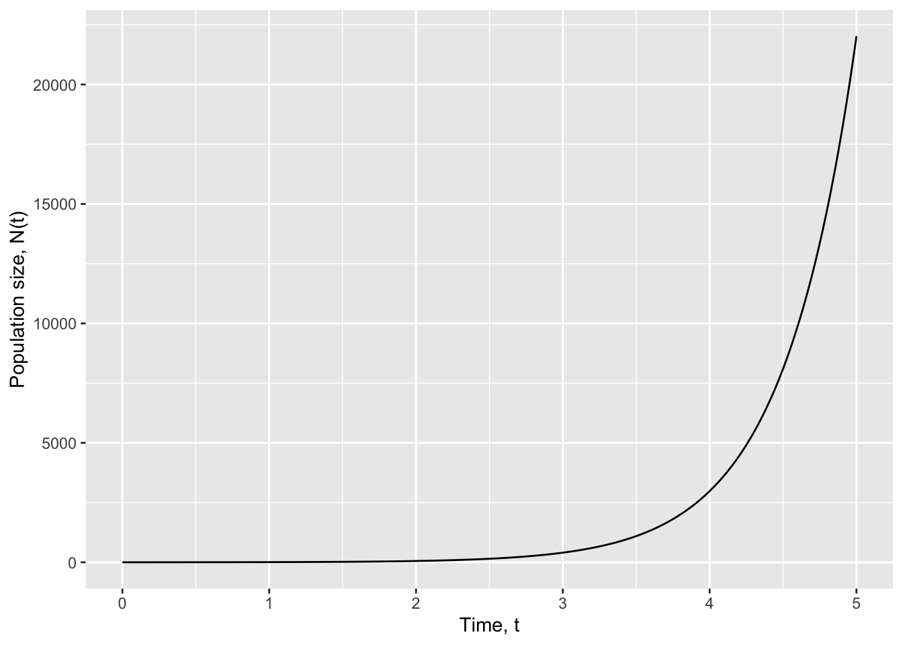
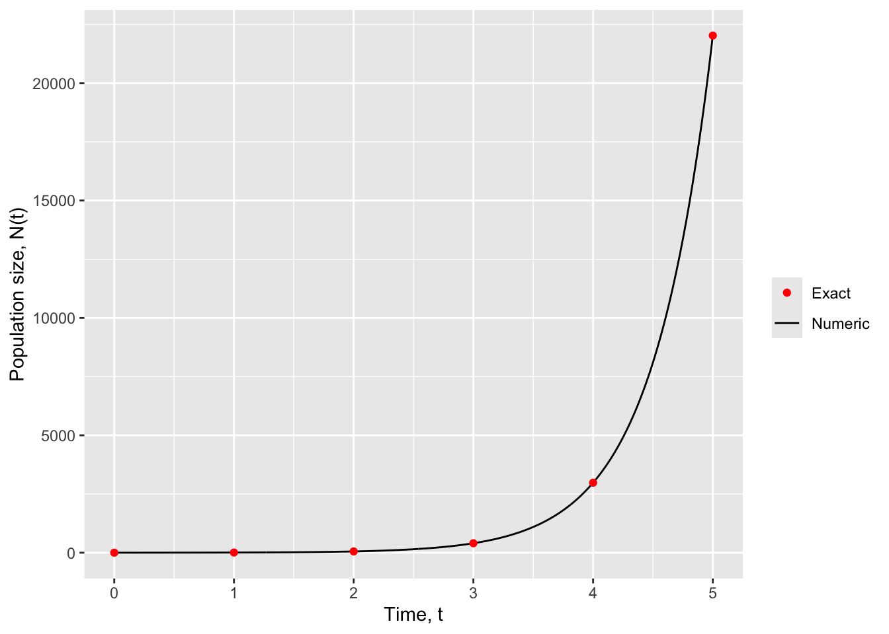
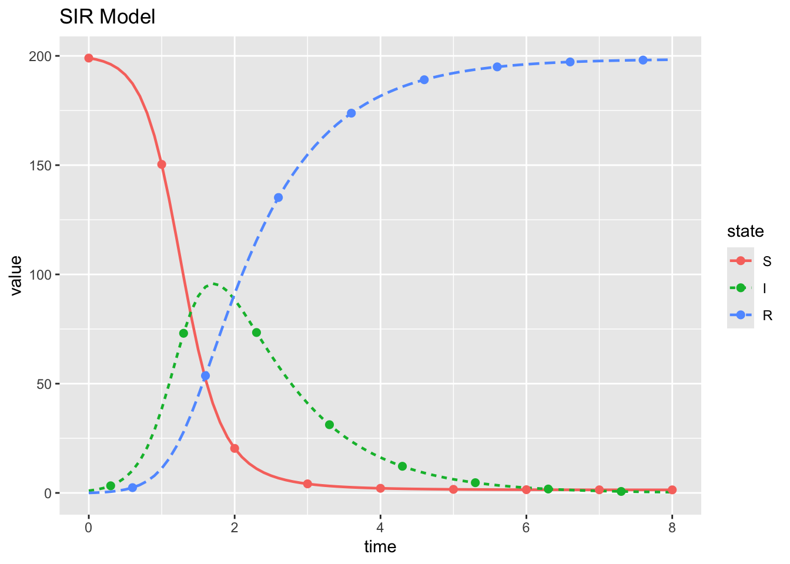
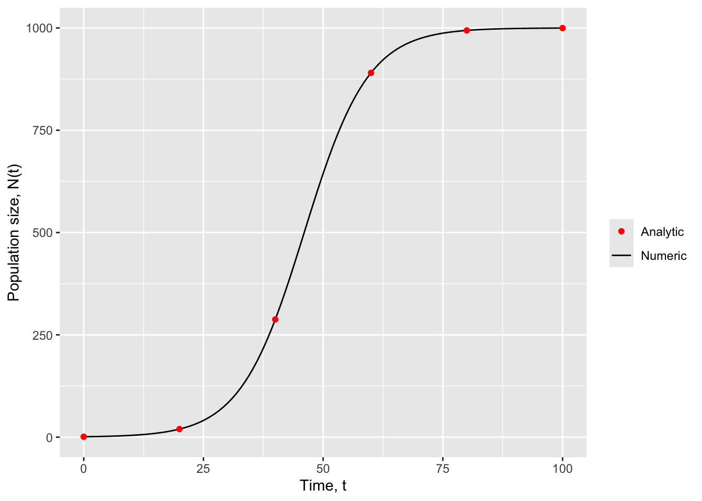
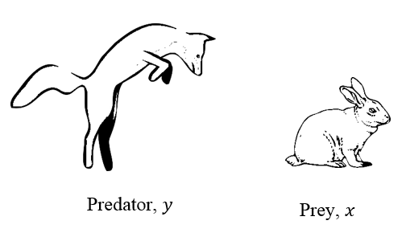
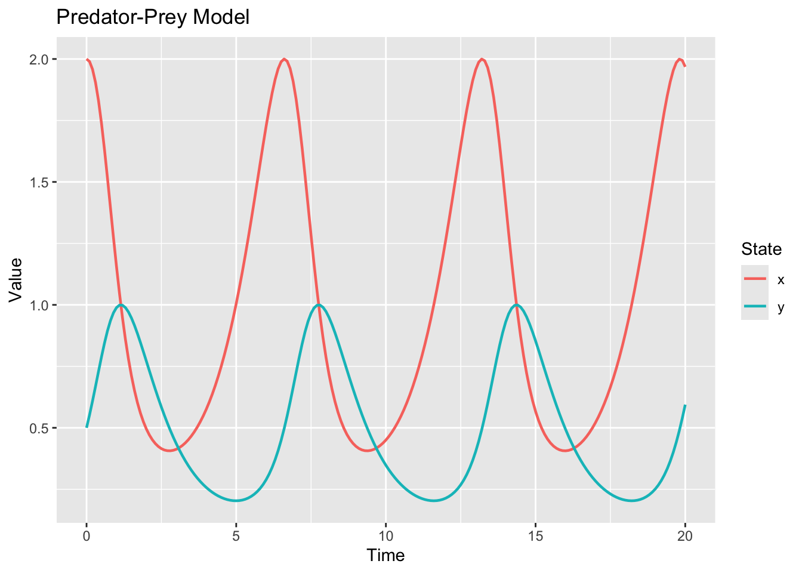

Differential Equations in R
Open a new script file for this session
We have put a file in the ./student_materials folder and given it a meaningful name, session2_differential_equations_practical.
Code summary
It is good practice to write a short description of your code to summarise its purpose for future users. Below is an example of such a description. Open RStudio, create a new file and copy and paste the code chunk below into your editor to start writing your own code:
###################################################
## DIFFERENTIAL EQUATIONS IN R PRACTICAL SESSION##
###################################################
# A model for COVID-19
# Some R code to numerically solve a set of ordinary differential equations
# and then plot the results# character mean in the R language?
Set working directory
You must let R know the location of any files you plan to import, so remember to set your working directory. The most reproducible way to do this is to use an RStudio Project, combined with the here package. Projects do a few things:
- Store project specific settings
- Project-specific .Rhistory, .Rprofile and a handful of other files
- Add a handy little piece of text on your RStudio icon
- Store it’s own history
- Set your working directory to the project-specific top-level folder.
They come with a file, ending in .Rproj, which you can open directly to open the project in RStudio.
Note that RStudio Project are specific to RStudio. If you change editor they won’t work.
To set up an RStudio project, go to File > New Project. Name it something useful. Now, our working directory is set.
If you don’t want to use an RStudio Project (you should), then you can manually set the working directory by going to Session > Set Working Directory > To Source Location
Alternatively, copy and paste the code chunk below into your editor, and edit according to your computer to continue writing your code:
# Windows
# setwd('your_path_goes_here')
setwd("your_path_goes_here")
# we recommend that you put it in '.\student_materials'
# Mac OSX
# setwd("./workshop")Material
In this session, we will go through some more advanced R programming topics, including how to solve differential equations using the deSolve package.
Part 1 covers:
- Background on differential equations
- Setting up differential equations in
deSolve - Solving differential equations in
deSolve
Part 2 covers:
- Systems of differential equations
- Solving coupled DEs using
deSolve
We recommend to save your text at the end of each part by printing the file.
Part 1: Solving differential equations
Differential equations
Differential equations are equations that describe the rate of change of some quantity (or quantities) with respect to an independent variable, typically time or space. For example, the rate per unit time at which chemical compounds are formed in chemical reactions, or at which heat dissipates from an object can often be described by systems of differential equations.
The package deSolve is used to solve systems of initial value problem differential equations within the R programming language. The package is based on previously developed FORTRAN routines and many deSolve functions are wrappers around existing FORTRAN codes.
As described in the deSolve introductory manual, differential equations are implemented and solved in R through two separate steps: model specification and model application. In the first step, model specification, the user is required to define the model parameters and state variables and implement the derivative function. In the next step, model application, the user specifies a time lattice upon which the solution to the differential equation should be returned and integrates the differential equations using the functions available in the deSolve package.
In this chapter we will implement several examples of systems of differential equations and use the deSolve package in R to solve them. (See deSolve manual.)
Simple example: population growth
To guide you through the model specification and application steps described above, we will start with an easy example: modelling population growth. One of the simplest models of population growth is the Malthusian model which assumes that a population of size \(N(t)\) grows at a rate proportional to its current size. That is, the growth rate per unit time of the population size obeys the relation
\[\frac{dN(t)}{dt} \propto N(t)\]
(where the symbol \(\propto\) means “is proportional to”). In this case, the larger the current population size \(N(t)\), the faster it grows.
We can convert the proportionality relation given above into a standard differential equation by introducing the population growth rate \(r\):
\[\frac{dN(t)}{dt} = rN(t)\]
This differential equation is one dimensional, ie it has only one state variable: \(N(t)\); and it has a single parameter: the growth rate \(r\). Note that in this example, and those that follow, we will always include the time dependence of state variables to help distinguish them from model parameters.
In order to fully specify the model mathematically we must provide an initial condition, ie the population size \(N\) at time \(t=0\), which we denote as \(N(t=0)=N_0\). Here we take
\[\begin{align} r &= 2 \\ N_0 &= 1 \end{align}\]
Given values for the growth rate \(r\) and the initial population size \(N_0\) we can now integrate (ie solve) our differential equation to determine the population size \(N(t)\) at future times \(t>0\).
Library loading
Before doing anything else, let’s install the deSolve package and then load it into our workspace. We’ll also need the tidyverse, which is a bunch of packages that make working with data a bit easier in R.
library(deSolve)
library(tidyverse)If you get an error while trying to load the package, make sure to install it through RStudio.
Setting up the differential equation
The first step in solving a differential equation in deSolve is to specify our model parameters and initialize our state variables
# Define model parameters and store values in a labelled vector
parameters <- c(r = 2) # Growth rate
# Specify the initial conditions, define state variables and assign initial values
initN <- 1 # Start with an initial population size N(0) = 1
state <- c(N = initN) # Specify the state variables and initialize them to their initial valuesThe model parameters, which in this case is just the growth rate \(r\), have been stored in the labelled vector parameters; and the state variables and their initial conditions have been defined in the vector state. Here we have been careful to ensure that the parameter and state variables are stored as vectors with assigned names and values.
Next, we specify the model differential equation (given above) as a user-defined R function:
# We specify the system of differential equations as a function in R
# Here we specify a function with three arguments:
# 1. t : time, which is the dependent variable in our case
# 2. state : a vector of state variables
# 3. parameters : a vector of parameters (ie fixed variables)
popmodel_exponentialgrowth <- function(t, state, parameters) {
# Initialize an environment with the elements of state and parameters as local variables
with(as.list(c(state, parameters)), {
dNdt <- r * N # The model equation
list(c(dNdt)) # Return the population growth rate dNdt
})
}In the function definition given above we have used the with(as.list(c(state, parameters),{...}) statement to create an environment that allows us to access the state and parameter variables directly by name within our function popmodel_exponentialgrowth. If we didn’t use with, then we would have to refer to all of our parameters and states using the name notation, such as parameters['r'].
The user-defined function popmodel_exponentialgrowth, which calculates and returns the rate of change of each of our state variables, is the function that we will pass to ode from deSolve in order to solve the differential equation. However, before we can do this, we first need to specify a time lattice over which we wish our solution to our differential equation to be returned:
# Start with an initial time of t=0 and solve up to t=5 with time increments of 0.01
times <- seq(from = 0, to = 5, by = 0.01)Note that the sequence of times defined here by the user only specifies the lattice points at which we require an estimate of the solution, in this case the population size. In general, if the times sequence consists of time points t1, t2, t3, … the ode solver will return an estimate of the solution N(t1), N(t2), N(t3), .... Importantly, the vector times is not related to the time step used by the numerical integration routine adopted by the ode solver in ode.
We now have all of the ingredients we require to solve our simple population growth model and are ready to call the ode integration function:
# Here we specify four arguments of the ode function:
# 1. y : the state variables
# 2. times : the time lattice over which we solve the differential equation
# 3. func : our differential equation given in terms of our state variables and model parameters
# 4. parms : our model parameters
out <- ode(y = state, times = times, func = popmodel_exponentialgrowth, parms = parameters)In the code above we call the ode function to numerically integrate our differential equation popmodel_exponentialgrowth and store the solution in the deSolve object out. To view the first few lines of output we can type
head(out) time N
[1,] 0.00 1.000000
[2,] 0.01 1.020202
[3,] 0.02 1.040812
[4,] 0.03 1.061839
[5,] 0.04 1.083289
[6,] 0.05 1.105173Here we see that the solution \(N(t)\) is given at each time point specified in the time lattice times, ie at intervals of \(\Delta t=0.01\) from \(t=0\) up to \(t=10\). Notice that the first value of the solution \(N\) at time \(t=0\) is the initial value we specified above, initN = 1.
Plotting the solution
ggplot doesn’t know how to deal with deSolve outputs directly, so we have to turn it into a data.frame using as.data.frame. Then, having done that, we can map our x and y axes and plot the solution:
ggplot(data = as.data.frame(out), aes(x=time, y=N)) +
geom_line() +
labs(x = "Time, t", y="Population size, N(t)")
The plotted solution shows a population that grows exponentially with time rapidly increasing in size to >20,000 individuals.
Using the solution provided by theode() function call and returned in the object out, determine the time interval during which the population size \(N\) exceeded 1000.
It is important to realize that rounding errors are inevitable during numerical integration and there is no guarantee that the solution generated by the ode function is accurate. Therefore, whenever possible, you should always validate your solution with known analytical results or approximations. Fortunately for our case, an exact analytical solution to the differential equation given above exists:
\[\frac{dN(T)}{dt} = rN(t) \quad \Rightarrow \quad N(t) = N_0 e^{rt}\]
where \(e\) is Euler’s number (=2.718282…). Given this analytical solution we can check the accuracy of our numerical solution by plotting the two solutions on the same graph:
# Create a coarse time lattice for display purposes
times_coarse <- seq(from = 0, to = 5, by = 1)
# Calculate the exact solution given the model parameters and initial conditions
Nexact <- initN * exp(parameters["r"] * times_coarse)
exact_solution <- data.frame(time = times_coarse, Nexact)
ggplot() +
geom_line(data = as.data.frame(out), aes(x=time, y=N, colour="Numeric")) +
geom_point(data = exact_solution, aes(x=time, y=Nexact, colour="Exact")) +
labs(x = "Time, t", y="Population size, N(t)", colour="") +
scale_color_manual(values=c("red","black"))
From the figure above we can see that the numerical solution obtained using the ode function (and its default parameter settings) provides a very accurate approximation of the exact model solution.
When exact, or even approximate analytical solutions are not available, another way to validate your numerical solution is by decreasing the time step to see if the solution varies substantially. If the solution is stable, eventually you should notice very little difference in the numerical solution as you continually decrease the time step, ie it should converge. This can be adjusted in the ode function using the rtol and atol parameters which set the relative and absolute error tolerances accepted during the integration routine (see deSolve manual.)
Part 2: Multi-dimensional systems
Exercise: The SIR epidemic model
To model the spread of infectious diseases it is common to split the population up into three disease states: \(S\), susceptible to infection; \(I\), infected and infectious; \(R\), recovered. During an outbreak the rates of change of each of these three populations can be described using the following system of (coupled) differential equations:
\[\begin{align} \frac{dS(t)}{dt}&=-\beta \frac{S(t)}{N}I(t)\\ \frac{dI(t)}{dt}&=\beta \frac{S(t)}{N}I(t)-\gamma I(t)\\ \frac{dR(t)}{dt}&=\gamma I(t). \end{align}\]
This system is known as the SIR model of disease transmission and contains two parameters: the infection transmission rate, \(\beta\); and the recovery rate, \(\gamma\).
Taking parameter values
\[\begin{align} \beta&=5\\ \gamma&=1 \end{align}\]
and initial conditions
\[\begin{align} S_0 &= 199\\ I_0 &= 1\\ R_0 &= 0 \end{align}\]
solve the SIR model following the same steps described above for the predator-prey model. Plot your solution to generate the following figure:

Exercises
- Describe the epidemic trajectory for the parameter values provided: When did the epidemic peak occur? What was the final size (total number of people infected) of the epidemic outbreak?
- The basic reproduction number \(R_0\) is defined as the average number of new cases generated by a typical infectious individual when introduced into a totally susceptible population. For the SIR model described above, the basic reproduction number is \(R_0 = \beta S_0 / \gamma\). Calculate the \(R_0\) for the parameter values given above.
- By considering a range of values for the transmission rate \(\beta\), describe how the epidemic trajectory varies as a function of \(R_0\). In particular, what happens when \(R_0<1\)?
- The quantity \(R_e(t) = \beta S(t)/\gamma\) is called the effective reproduction number and it accounts for the depletion of susceptibles as the infection sweeps through the population. Review your previous results and record the value of \(S(t_{peak})\) where \(t_{peak}\) is the time at which the infectious population reaches its maximum, ie the epidemic peak. Using these values of \(S(t_{peak})\) calculate \(R_e(t_{peak})\) and report any patterns that you observe.
- If the reproduction number gives the multiplicative growth rate in the number of infectious individuals can you explain your observations from the previous two questions.
Extension exercises
From the figures we have generated so far you might have noticed that the Malthusian growth model is probably not appropriate in most settings (Why? Try solving the model over a longer time horizon to find out). A more realistic model of population growth is given by the logistic growth model where the growth rate \(r\) now varies as a function of the population size:
\[ r \rightarrow r\left(1 - \frac{N(t)}{k}\right)\]
such that the rate of change in population size \(dN(t)/dt\) becomes
\[\frac{dN(t)}{dt} = rN(t) \left(1-\frac{N(t)}{K}\right).\]
Notice we have now introduced a new parameter in our model: the carrying capacity, \(K\).
Your task is to adapt the code sequence above which we used to solve the Malthusian (exponential) growth model to solve the logistic growth model. You may take the following values for the model parameters and state variables:
\[\begin{align} r &= 0.15 \\ K &= 1000 \\ N_0 &= 1 \end{align}\]
You will have to first determine what the model state variables and parameters are and then write your own function to evaluate the logistic function according to the above equations.
Exercises
- How does the logistic growth model vary from the exponential model?
- How does varying the parameter \(K\) vary the solution?
- What happens if you change the initial conditions?
Once again, an exact solution to our differential equation is available - it is given by
\[N(t) = \frac{K}{1+\left(\frac{K}{N_0}-1\right)e^{-rt}}\]
Using this exact solution, check the accuracy of your numerical solution. Your answer should look something like the figure below:

Often we are interested in dynamical systems that are described in terms of several state variables \((x1(t),x2(t),…,xn(t))\). For example, in chemical reactions we may want to track the concentrations of several reactants and products through time, or in ecological studies the population sizes of various species. In these cases we expect a system of differential equations, often one for each state variable:
\[\begin{align} \frac{dx_1 (t)}{dt}&=f_1 (x_1,x_2,,…,x_n,t)\\ \frac{dx_2 (t)}{dt}&=f_2 (x_1,x_2,…,x_n,t)\\ \vdots \\ \frac{dx_n (t)}{dt}&=f_n (x_1,x_2,…,x_n,t). \end{align}\]
On the left we have the rate of change of each state variable \(x_i(t)\) and on the right we have a function \(f_i\) describing that state’s rate of change. Notice that in the general case, each of the rate of change functions \(f_i≡fi(x_1,x_2,...,x_n,t)\) is a function of the other state variables in the system, ie the derivative of \(x_i\) may (most likely) depend on the current values of the remaining state variables, \(x_j\). If this is the case we say that our system of differential equations is coupled.
Let us look at a specific example of a coupled set of differential equations. Consider a simple model of two interacting animal populations first described by Lotka (and later by Volterra). One species is the prey whilst the other is the predator. We shall denote their population sizes at time as \(x(t)\) and \(y(t)\) respectively.

In the Lotka-Volterra model the growth rates of the two populations are given by the following system of differential equations:
\[\begin{align} \frac{dx(t)}{dt}&=\alpha x(t)-\beta x(t)y(t),\\ \frac{dy(t)}{dt}&=\delta x(t)y(t)- \gamma y(t). \end{align}\]
In the system above, \(\alpha\) is the growth rate of the prey population; \(\beta\) is the predation rate; δ is the growth rate of the predator population \(\delta\) and; \(\gamma\) is the death rate of the predator population. Note that the two animal populations interact through the predation term \(\beta x(t)y(t)\).
To complete the description of our model we supply initial conditions for the predator and prey populations which we denote \(x_0\) and \(y_0\) respectively. In particular we take for parameter values and initial conditions: \(\alpha=1\), \(\beta=2\), \(\delta=1\) and \(\gamma=1\); \(x_0=2\) and \(y_0=0.5\).
The below code blocks provide parameters and initial conditions for the system:
# Define model parameters and store values in a labelled vector
parameters <- c(
alpha = 1, # prey growth rate
beta = 2, # predation rate
delta = 1, # predator growth rate
gamma = 1 # predator death/removal rate
)# Specify the initial conditions
initx <- 2 # Initial prey population size
inity <- 0.5 # Initial predator population size
# Define the state variables and assign initial values
state <- c(x = initx, y = inity)Your task is to solve the differential equation over the following time lattice:
# Specify the initial and final times of the solution vector
tinit <- 0 # Initial time
tfinal <- 20 # Final time
step_size <- 0.1 # Time increment
times = seq(from = tinit, to = tfinal, by = 0.1) # Time vectorYou need to create the function that evaluates the differential equation and create the following plot:
